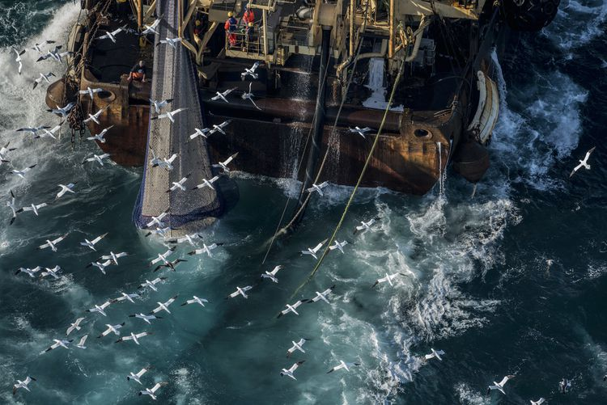

The Oil Spill Problem
Oil spills occur when crude oil or refined petroleum products are released into bodies of water, whether intentionally or accidentally. These spills can result in significant harm to the environment, including damage to ecosystems, contamination of water supplies, and harm to wildlife. They also have serious economic consequences, such as lost revenue for the fishing and tourism industries, and the expense of cleanup efforts. The severity of an oil spill is determined by factors such as the amount and type of oil spilled, the location of the spill, and weather conditions. The effects of oil spills can persist for years or even decades after the initial incident.
The cleanup of oil spills can be challenging and costly, and there is no guaranteed method for removing all the spilled oil from the environment. Oil spills also contribute to climate change because burning fossil fuels, including oil, releases greenhouse gasses that trap heat in the atmosphere. In recent history, several high-profile oil spills have occurred, including the Deepwater Horizon oil spill in the Gulf of Mexico in 2010, the Exxon Valdez oil spill in Alaska in 1989, and the Amoco Cadiz oil spill off the coast of France in 1978.
Taking Action Against Water Pollution
Individual and Collective Efforts:
To fight water pollution, we need to work together and do our part. Simple changes in our daily life can help a lot. Using green cleaning products, using less plastic, and throwing away dangerous waste correctly can keep our water clean. Additionally, we can support organizations dedicated to clean water initiatives. Finally, advocating for more stringent regulations on industrial waste disposal can address the core of the problem.
Getting Involved in Your Community:
Joining or organizing community events focused on combating water pollution is another effective way to take action. Participate in local river, lake, or beach cleanups, and collaborate with other community members to raise awareness. Share the issue with your friends, and family and encourage them to make choices that lead to a healthier environment.
"Water and air, the two essential fluids on which all life depends, have become global garbage cans." - Jacques-Yves Cousteau
This quote by Jacques-Yves Cousteau emphasizes the need to treat our planet with respect and highlights the urgency of addressing water pollution. We must take responsibility and act now to ensure a sustainable future for all living beings.
Fishing Fleets
Overfishing leads to a great percentage of pollution in the ocean today. Fishing boats often dump waste into the water. This includes nets, gear, fishing line, hooks, traps, and much more. This has damaged critical habitats and even human recreational areas. There is no simple solution to combating overfishing, so what can be done?
 Caption: A fishing vessel, illustrating the scale of commerical fishing vesels. Image by treehugger.comDangers of equipment
Fishing gear like nets, lines and hooks are designed to kill. The use of them alone has contributed to depleting fish populations and altering food webs. Fishing fleets are often careless and tend to discard their gear into the ocean when they are done with them. Fishing gear is often made out of plastic due to its low cost and how lightweight it is. This is oftentimes referred to as ghost gear. When at the bottom of the water fish and other sea life get entangled in it and die. Nets take up about forty six percent of the Great Garbage Patch.
Results from pollution
Pollution from overfishing has washed up on many islands and beaches. This can not only damage sea life, but humans and tourism. Having nets or hooks near populated areas can be dangerous and potentially injure someone. They can also hurt marine animals in shallow water. For example, nets can smother habitats and damage seabeds. Its summon for nets to hurt important breeding grounds for various marine species.
What now?
So what can we do? You might have been told to use less plastic straws. However, fishing equipment is responsible for much larger damages. Documentaries have brought a lot of exposure to the problem and inspired others to eat less fish and advocate for change. Sustainable fishing is greatly needed. This can be brought to life by passing regulations and advising fishing fleets. This can be done through GPS and placing no take areas.
Information on how to fight water pollution water pollution · Images by alamy.com